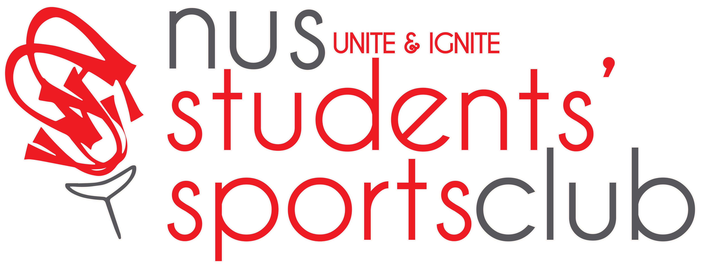

Brought to you by: 
NUS Biathlon is back!
Organized by the NUS Students' Sports Club, this annual event is one of the main highlights on the NUS sporting scene.
NUS Biathlon provides an opportunity for everyone whether you're an NUS staff, student or a member of the public. If you're a trained athlete wanting to compete or a newcomer simply looking for a challenge, you're more than welcomed to join us!
National University of Singapore(NUS) Students’ Sports Club
The National University of Singapore Students’ Sports Club (NUSSSC) is one of the most active student-run organization in the campus. Dedicated to providing the NUS population with a wide array of sporting activities and a channel to enrich their campus lives, we cater to the recreational sporting needs of the NUS community.
From the club’s roots in 1979, 2014 marks the 34th year of our club and is currently being led by the 34th Management Committee. Being the largest and most active non-faculty constituent club in NUS; our objective is to promote a healthy lifestyle and community bonding through recreational sports. Our club now boasts a family of 27 member clubs, classified accordingly into Martial Arts, Indoor, Land and Sports. In line with our vision of encouraging the NUS community in their pursuits of sporting interests, NUSSSC also spearheads a number of major Sports Club events such as NUS Biathlon, SunNUS, NUS Sports Camp and RunNUS.
Find out more about NUS Students’ Sports Club
Organized by the NUS Students' Sports Club, this annual event is one of the main highlights on the NUS sporting scene.
NUS Biathlon provides an opportunity for everyone whether you're an NUS staff, student or a member of the public. If you're a trained athlete wanting to compete or a newcomer simply looking for a challenge, you're more than welcomed to join us!
National University of Singapore(NUS) Students’ Sports Club
The National University of Singapore Students’ Sports Club (NUSSSC) is one of the most active student-run organization in the campus. Dedicated to providing the NUS population with a wide array of sporting activities and a channel to enrich their campus lives, we cater to the recreational sporting needs of the NUS community.
From the club’s roots in 1979, 2014 marks the 34th year of our club and is currently being led by the 34th Management Committee. Being the largest and most active non-faculty constituent club in NUS; our objective is to promote a healthy lifestyle and community bonding through recreational sports. Our club now boasts a family of 27 member clubs, classified accordingly into Martial Arts, Indoor, Land and Sports. In line with our vision of encouraging the NUS community in their pursuits of sporting interests, NUSSSC also spearheads a number of major Sports Club events such as NUS Biathlon, SunNUS, NUS Sports Camp and RunNUS.
Find out more about NUS Students’ Sports Club
Meet the Team
 Contact Us
Contact Us
NUS Biathlon
Sports and Recreation Centre
2 Sports Drive 1
Singapore 117561
 Organizer
Organizer
Other Events

NUS Sports Camp
RunNUS
Contact UsNUS Biathlon
Sports and Recreation Centre
2 Sports Drive 1
Singapore 117561
OrganizerOther Events
NUS Sports Camp
RunNUS